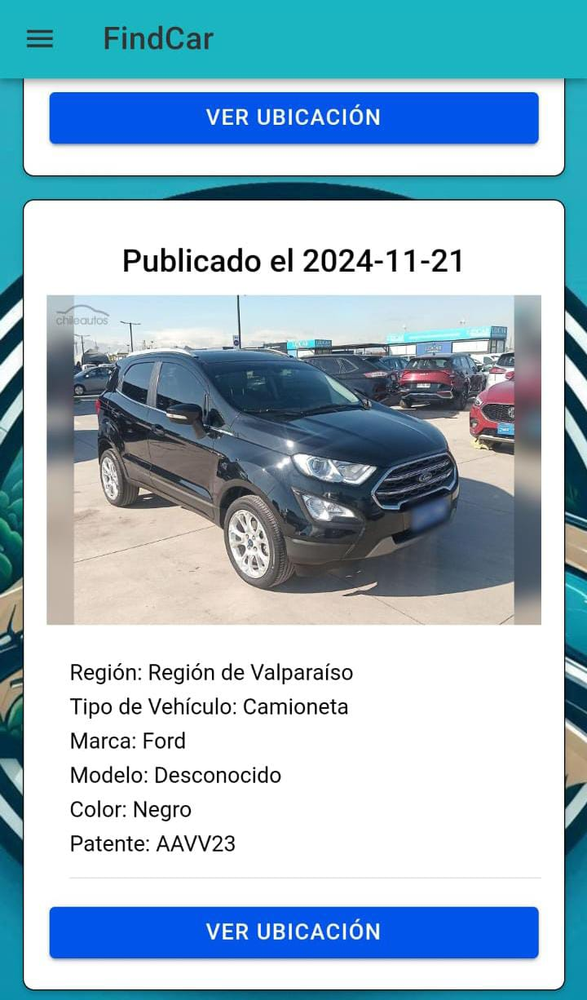

¡Encuentra tu auto perdido o reporta vehículos abandonados con
FindCar!
La app que combina cámara y GPS para localizar vehículos
abandonados, combatir el robo y ayudarte a verificar si uno de los
autos es el tuyo.
¿Qué es FindCar?
FindCar es tu aliado en la seguridad vehicular. Utiliza la cámara
de tu móvil y tecnología GPS para Fotografiar y registrar autos
abandonados, consultar si tu vehículo robado está en nuestra base
de datos y ayudar a otros usuarios a identificar autos en estado
de abandono.
Características Clave

Captura precisa: Utiliza la cámara de tu móvil para registrar
autos abandonados de manera sencilla y rápida.
Ubicación en tiempo real: Con GPS, registra con exactitud la
localización de cualquier vehículo.
Búsqueda eficiente: Accede a una base de datos para investigar si
un auto coincide con el tuyo.
Requerimiento Clave
Para utilizar nuestra aplicación y acceder a todas sus funciones principales,
primero debes registrarte creando una cuenta con tus datos. Una vez registrado,
solo necesitas iniciar sesión para disfrutar de todas las herramientas y servicios que hemos preparado para ti.
¡Es rápido, sencillo y seguro!
Testimonios
"Con FindCar, recuperé mi auto robado en menos de una semana. ¡Es
increíble!"
— María López, usuaria satisfecha
"Es una herramienta revolucionaria para reducir el abandono de
vehículos en nuestras calles."
— Carlos Méndez, policía local
Escanea el codigo QR para poder descargar nuestra aplicacion